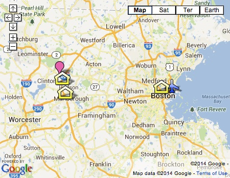
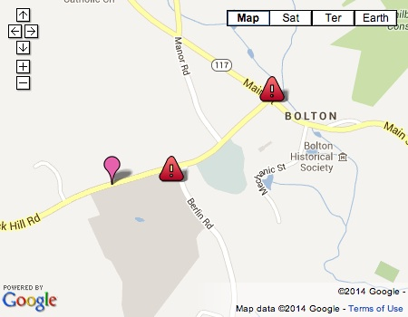
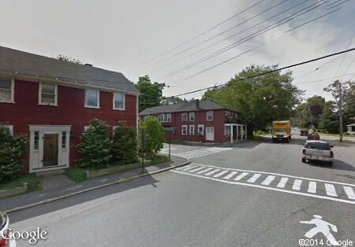
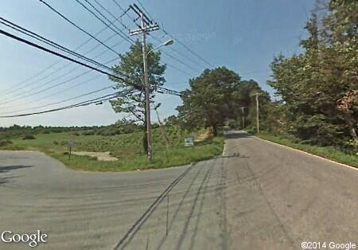
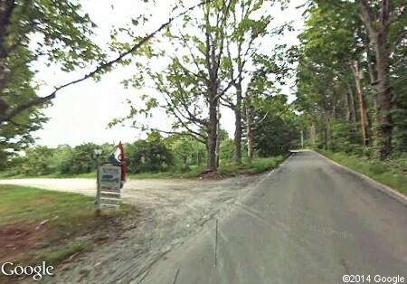

Maps
Click on map to see details for airport, ceremony/reception, and hotel locations:

There are three tricky turns to find Nashoba Valley Winery in Bolton. Click on map for details:

** The highway sign directing you to the winery from 495 is deceptive. Make sure to take 117 WEST from 495. That will be a right turn from 495 North.
The left turn onto Wattaquadock Hill Road:

Stay to the right at this fork in the road:

The left turn into Nashoba Valley Winery!
